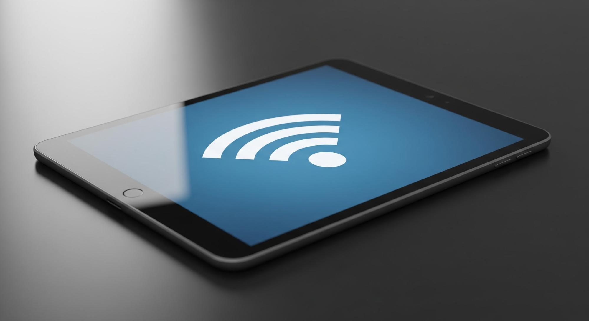
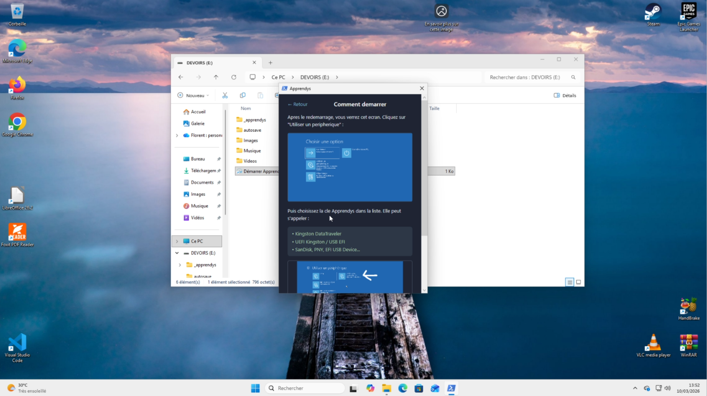
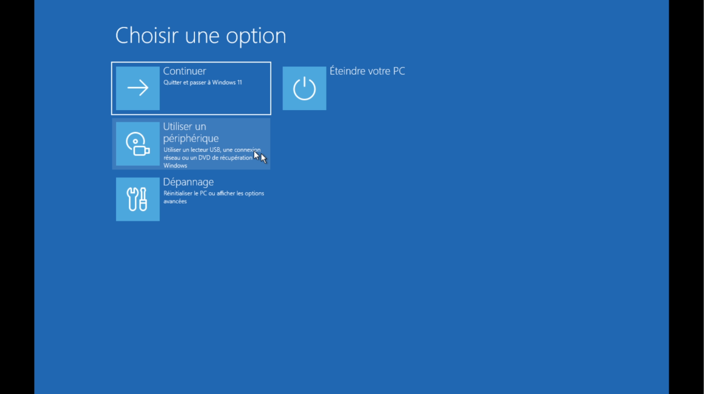
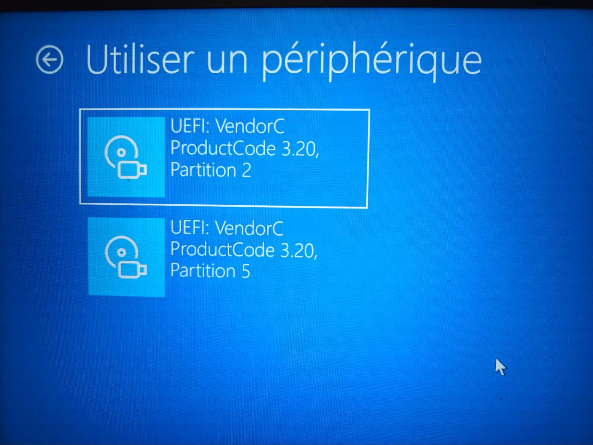
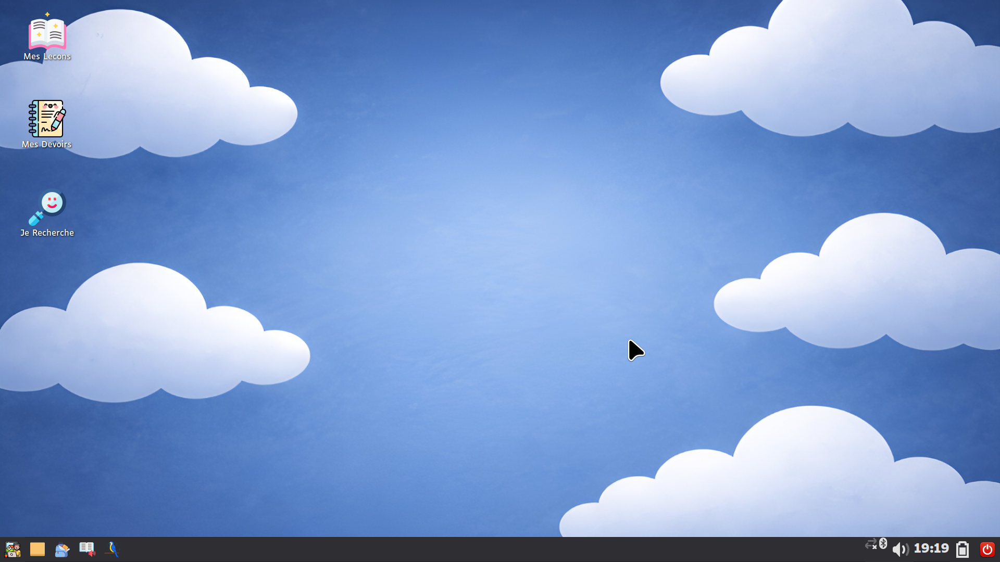
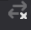
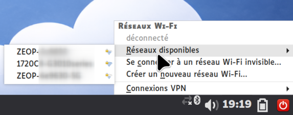
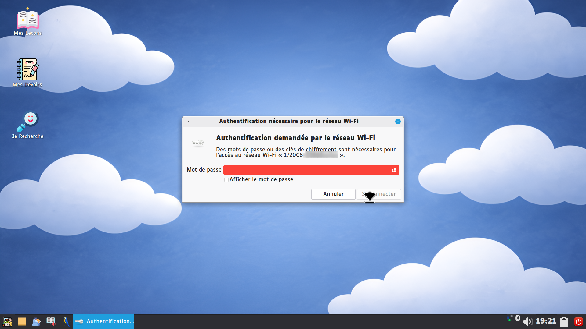

1
Brancher la clé et lancer Apprendys
- Branchez la clé USB
- Ouvrez le dossier DEVOIRS s'il ne s'ouvre pas automatiquement
- Double-cliquez sur « Démarrer Apprendys »
Si ce raccourci n'apparaît pas : ouvrez le dossier _apprendys puis cliquez sur 01 - CLIQUE ICI POUR COMMENCER.bat
⚠️ Windows affiche un message de sécurité ? Cliquez simplement sur Oui. C'est normal : Windows vérifie que vous autorisez le lancement.
2
Vérifier le lanceur Apprendys
Vous arrivez sur le lanceur Apprendys. Vous voyez trois indicateurs : Clé détectée, BitLocker non actif, Mode BIOS.
🟢 Si les 3 pastilles sont vertes
Cliquez sur « Démarrer Apprendys ». L'ordinateur va redémarrer automatiquement sur Apprendys.

🟡 Si la dernière pastille est jaune (Mode Manuel)
Pas de panique. Cliquez sur Redémarrer. Une fenêtre explicative apparaît avec les instructions à suivre.
3
Démarrer en mode manuel (si nécessaire)
Après redémarrage :
- Cliquez sur « Utiliser un périphérique »
- Sélectionnez la clé USB — c'est généralement la seule ligne contenant « USB ».


❗ Cas particulier — si deux lignes apparaissent : choisissez toujours Partition 2. Selon les BIOS, le nom peut être étrange ou ne pas contenir « USB ». C'est normal.
Après sélection, Apprendys démarre automatiquement.
4
Configurer le Wi-Fi sur Apprendys
Une fois sur le bureau Apprendys :
- Cliquez sur l'icône réseau en bas à droite (petites barres)
- Sélectionnez votre réseau Wi-Fi
- Cliquez sur Se connecter
- Entrez votre mot de passe. Et voilà, la clé est connectée.




🛠️ FAQ technique rapide
❓ La clé ne démarre plus ?
- Vérifiez qu'elle est bien insérée
- Testez un autre port USB
- Vérifiez que les broches ne sont pas endommagées
- Assurez-vous d'avoir sélectionné la bonne partition en mode manuel
📞 Besoin d'aide ?
Si quelque chose ne fonctionne pas, ne restez pas bloqué. Apprendys est un projet accompagné — vous n'êtes pas seul.
📧 cf.informatik974@gmail.com — 📱 06.92.06.93.68
📧 cf.informatik974@gmail.com — 📱 06.92.06.93.68